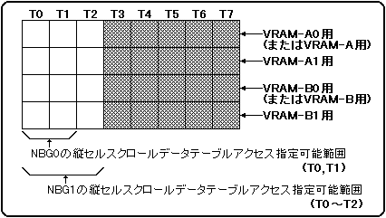

NBG0、NBG1において縦セルスクロール機能を使用する場合には、パターンネームデータ、キャラクタパターンデータ(ビットマップパターンデータ)のほかに縦セルスクロールテーブルデータも読み出さなければなりません。縦セルスクロールテーブルデータリードアクセスは、1面あたり1サイクル中に1回必要です。NBG0用の縦セルスクロールテーブルデータリードアクセスは、T0またはT1のタイミングに指定しなければならず、NBG1の縦セルスクロールテーブルデータリードアクセスは、T0〜T2の内のタイミングに指定しなければいけません。また、NBG0用とNBG1用のアクセスは、必ず同じバンクで、しかもNBG0用のアクセスを先に指定しなければいけません。
同じ縦セルスクロールテーブルデータリードアクセスを、複数のバンクに対して指定する場合には、必ず同じアクセスタイミングに指定しなければいけません。
縦セルスクロールテーブルデータのアクセス指定制限を図3.5に示します。
図3.5 縦セルスクロールテーブルデータのアクセス指定制限
